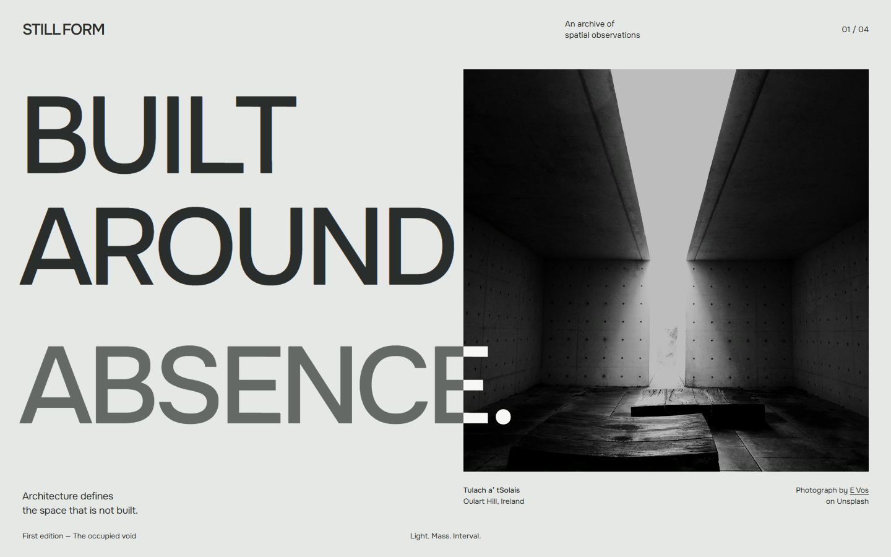
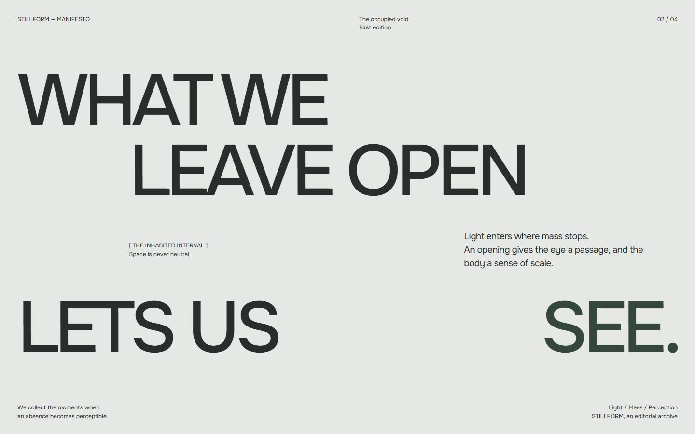

Existing approved screenshot. The entrance has finished; the photograph retains its final crop.
Proposed keyframe, not a recording. Image windows withdraw from the original seam. The reading column emerges on its left edge.

Actual static browser render. No photograph remains behind the copy. The opening has become a horizontal pause in the statement.
The vertical seam begins at the photograph’s opening; it does not jump to the page center. Its expanding mineral field reaches the paragraph’s final grid slot before the paragraph becomes readable. The final composition then returns to ordinary document flow.
Keep the approved portrait Hero intact. As it leaves, withdraw a single photographic window upward; bring the Manifesto’s opening lines into view, then its indented reading interval. No split panels, squeezed text or mandatory pin. If the entrance is still active, use normal flow for this visit.